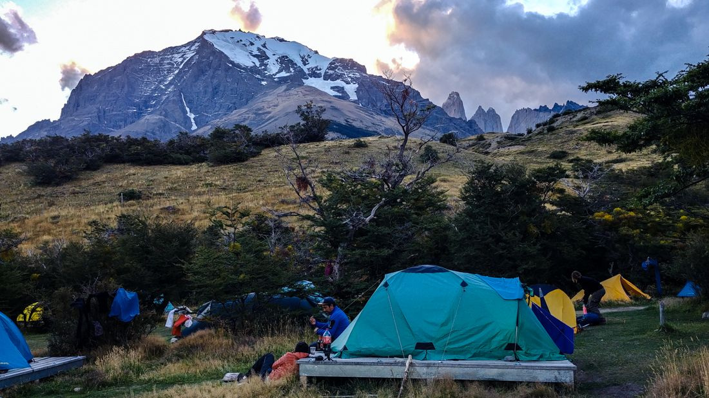

Aquí encontrarás viajes, tours, programas, excursiones, información, tips y mucho más.
Patagonia es una de las maravillas naturales del mundo, conjuga perfectamente la flora con sus sobrecogedores paisajes únicos de glaciares, montañas, fiordos, islas, ríos, bosques y muchos rincones aún vírgenes, interesantes de explorar a través del trekking, cabalgatas, kayak, ciclismo y pesca, entre otras.
Dentro de la Patagonia destaca el Parque Torres del Paine como uno de los principales lugares donde miles de turistas de todo el mundo llegan hasta aquí para visitarlo y llevar un recuerdo inolvidable.
Introducción
El Parque Nacional Torres del Paine es uno de los rincones más espectaculares que podemos visitar en el planeta. Un territorio donde te envuelve la naturaleza más salvaje. Enclavado en el corazón de la Patagonia chilena, recoge en cada roca el latir de un territorio único que el clima más adverso se ha encargado de esculpir con delicado gusto durante siglos.
Cada paso, cada mirada, sea en la dirección que sea, merece la pena. La sensación de recorrer y sentir uno de los lugares más bonitos que visitarás en tu vida es indescriptible. Aquí todo es inmenso. Cada glaciar, cada cima y cada lago se funde infinito en el horizonte.
Fundado en 1959, el Parque Nacional Torres del Paine está ubicado en la Región de Magallanes y Antártica Chilena y fue declarado Reserva de la Biosfera por la UNESCO en 1978. La inmensidad de sus glaciares, sus relieves escarpados y su infinita biodiversidad otorgan al lugar una belleza única y singular.
GALERIA DE FOTOS
Circuitos
Entre los lugares que podemos visitar destacan: las legendarias Torres del Paine (escalada histórica), el macizo de los Cuernos, el lago Nordenskjold o el glaciar Grey. Y entre su fauna, el imponente puma, el icónico condor o el curioso guanaco.
Nos encontramos en uno de los últimos rincones del planeta conquistado por el ser humano. Elegido octava maravilla del mundo en 2013 y un imprescindible que todo amante de la naturaleza debería visitar al menos una vez en la vida.
Una de las mejores, más completa y popular forma de descubrir los lugares más emblemáticos del Parque Nacional es el Circuito W. Acampar y dormir en la noche patagónica y sentir a cada paso la magia de este lugar es una experiencia única.
El Circuito W
El Parque Nacional Torres del Paine, en la Patagonia chilena, posee uno de los trekkings más célebres del mundo. El Circuito W, nombre dado por la forma del circuito, te da la oportunidad de admirar las maravillas más destacadas del Parque. Probablemente tengas en tu cabeza la imagen del Mirador Torres, con sus enormes moles de granito vertical, pero este circuito nos muestra muchísimo más que eso, es sin duda un desafío para los amantes de la montaña, algo mágico y memorable.El circuito completo tiene 71 kilómetros de longitud, lo normal es invertir entre 4 y 5 días. Es importante que tengas cierta preparación física, ya que habrá días que andes hasta 25 kilómetros. Además,ten en cuenta que el peso de tu mochila y los imprevistos,como las condiciones meteorológicas adversas, pueden entorpecer la marcha.
Descripción del Circuito
El circuito de la W se puede hacer en ambas direcciones y adaptando el recorrido a las necesidades, posibilidades y preferencias de cada persona. Desde Cima Norte, recomendamos hacerlo en 5 etapas (cuatro noches) y siguiendo el siguiente itinerario:
Etapa 1
A las 7.00h de la mañana tomamos en la Estación de Puerto Natales el autobús que nos llevará hasta el Parque Nacional Torres del Paine (unas 2h). En la entrada del parque (Portería Laguna Amarga) es obligatorio bajarse y registrar tu entrada. Volvemos a subir al mismo bus, que espera a sus pasajeros, y continuamos hasta Pudeto. Desde aquí sale un Catamarán que nos llevará hasta el Campamento Paine Grande (Precio 20.000 CLP solo efectivo). Por fin comenzamos a caminar y nos adentramos en un espectacular valle que nos conduce hasta el Glaciar Grey. Aquí, en el Campamento Grey pasamos la primera noche. (3,5 horas de caminar).
Etapa 2
Retrocedemos sobre nuestros pasos y descendemos el Valle hasta el Campamento Paine Grande. Y ahora continuamos hacia el este con destino al Campamento Italiano. Aquí pasaremos la segunda noche. (6 horas de caminar).
Etapa 3
Dejamos las mochilas en el Campamento Italiano y ascendemos el segundo Valle que nos llevará al Mirador Francés, primero, y al Mirador Británico después (3 horas en total). Ahora retrocedemos sobre nuestros pasos, recogemos las mochilas en el Campamento Italiano y continuamos hasta el Campamento Cuernos, donde pasaremos la tercera noche. (7,5h de caminar).
Etapa 4
Nos desplazamos desde el Campamento Cuernos hasta el Campamento Chileno. (6,5 horas de caminar).
Etapa 5
Nos levantamos de madrugada y caminamos en la noche hasta el Mirador de las Torres del Paine (amanece sobre las 7 de la mañana y se tarda 2,5 horas en llegar hasta aquí). Contemplamos el anaranjado amanecer sobre las Torres del Paine. Luego regresamos sobre nuestros pasos, recogemos las mochilas en el Campamento Chileno y descendemos hasta la Portería Laguna Amarga (7,5 horas de caminar). Aquí tomamos el bus que nos llevará de vuelta a Puerto Natales.

Consejos Prácticos
1_Es imprescindible reservar con antelación todos los sitios donde vamos a dormir. Los campamentos están gestionados por CONAF, Vértice Patagonia y Fantástico Sur.
2_Lo más aconsejable es llevar todo lo necesario para el viaje desde Puerto Natales (los precios dentro del parque son muy altos). Comida, equipo completo de cocina, esterilla, sacos de dormir, y tienda de campaña.
3_Asumir que te vas a mojar. En un mismo día puedes vivir las cuatro estaciones del año. Guardar siempre una ropa seca para cuando lleguemos al campamento a dormir.
4_Se puede rellenar agua en los distintos ríos y arroyos que encontraremos en el interior del Parque.
5_Cuidado con los ratones, pueden agujerear tu tienda en busca de comida. Se puede colgar en árboles fuera de la tienda o dejarla en las porterías de cada campamento.
6_Está totalmente prohibido hacer fuego o fumar fuera de las áreas habilitadas de cada campamento